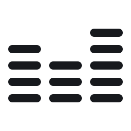

全要素生成
写下整个场景，
直接听见成片。
人物、动作、空间与音乐不再分开制作。模型理解一段完整描述，并在同一条时间线上完成组织。

真人感TTS像真人一样，自然表达。
从轻声倾诉到生动讲述，细腻呈现语气、停顿与情绪。
我最近记性是真不行了，昨天想跟你说那个电影来着，就那个，主角是叫，叫什么来着，周星……哦不对不对，是沈腾，沈腾演的那个，哎呀真的是名字到嘴边了就是说不出来。呃，对了，马丽也演了。你说我这才三十就这样，等六十那还得了，钥匙估计都得，都得挂脖子上。
哎跟你说！我刚才辅导作业，本来好好的在那写作业呢，孩子突然情绪直接大爆发，我都懵了。但我还不能吼他，只能蹲那儿哄，跟他讲道理安抚半天，好不容易给哄好了。好家伙，他没事了，我快憋出内伤了！有时候我都怀疑，我到底是妈还是情绪垃圾桶啊！完了我还得不停给自己洗脑，要做情绪稳定的家长。我天啊外人看着可能说不就辅导个作业嘛，实际上可太耗人了。我现在就瘫沙发上缓缓神，也就找你吐槽下，辅导作业这破活真的谁干谁知道！
我跟你说啊你别不信,我今天那个红烧肉真做成了!糖色都炒对了,一点没糊。我给我妈拍了照发过去,她说,她说看着倒是挺像样。我自己就,就着这个吃了三碗饭。下回你来,我给你做,保证不比外头差我跟你说。
家里那狗，今年，嗯，十三了。以前我一开门它就冲过来，现在，呃，现在得叫两声它才慢慢起来。前两天带它去检查，医生说各项指标还行，就是老了。我回来抱着它，唉，我就想我，我怎么就没多带它出去玩几次。
Hey, you okay? Aw, don’t force a smile—I can tell something’s bothering you. Oh, wait, did I say too much? Sorry, but, if you don’t want to talk, that’s okay too. Hmm, maybe we can just sit here for a little while together.
Man, my sister’s back with him...Again! I don’t even know what to say anymore. Like, this dude treats her like shit, they break up, she cries for a week, and then two months later he’s somehow back at her place. I mean… whatever, it’s her life. Still pisses me off, though.
I had a list of like seven states I could go to, and, Wyoming was like, probably the last one I would've picked. Well, I don't know, I just thought it was this middle-of-nowhere place. But then I had this weird dream one night about going somewhere with a ton of snow, and I was like, okay... I guess Wyoming. So yeah, I basically picked the place with the worst weather on my list.
I mean, growing up there was fine, I guess, but there was just nothing to do. Everybody knew everybody, and it felt like you were stuck in the same place all the time. So yeah, as soon as I finished high school, I was ready to get out and go somewhere bigger.
I mean, growing up there was fine, I guess, but there was just nothing to do. Everybody knew everybody, and it felt like you were stuck in the same place all the time. So yeah, as soon as I finished high school, I was ready to get out and go somewhere bigger.
I had a list of like seven states I could go to, and, Wyoming was like, probably the last one I would've picked. Well, I don't know, I just thought it was this middle-of-nowhere place. But then I had this weird dream one night about going somewhere with a ton of snow, and I was like, okay... I guess Wyoming. So yeah, I basically picked the place with the worst weather on my list.
All my kids hated it here. They couldn't wait to leave as soon as they graduated high school. But I thought it was good raising kids in a small town. You don't have big classes cuz they all have small classes. I mean, even the biggest classes have less than 20 students.
音色设计
用一句描述，
塑造独特声音。
设定音色、语气与情绪，塑造鲜明的角色声音。
VOCAL
Vocals that
move you.
Describe the singing style, voice, and emotion to generate a cappella vocals.
全要素生成
一个模型，
生成全声场。
用自然语言描述，即可在同一段音频中一并生成多角色对白、音效与环境音。
夏夜大排档
音效与音乐
不止于语音，
也能生成音效与音乐。
同一个模型，支持生成音效、音乐及其混合声音。